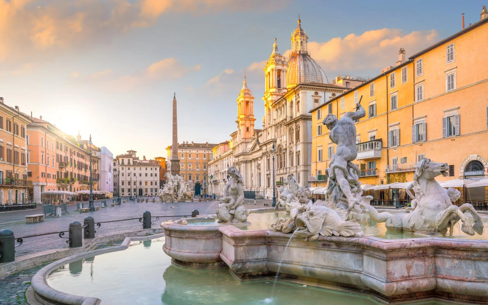
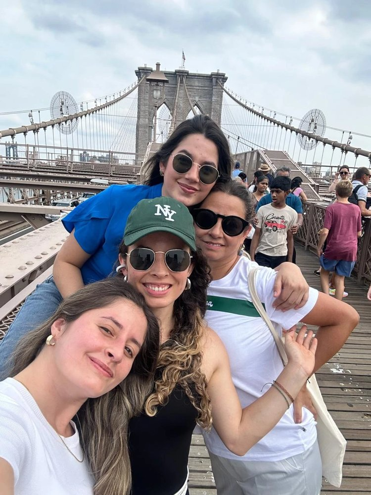
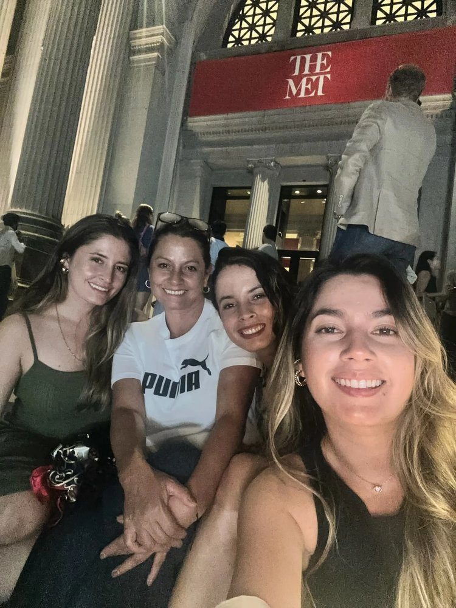

2026
Un pedacito de nosotras en Roma
Tres días para descubrir, aprender, caminar y crear recuerdos juntas.
📅 22 – 25 de noviembre de 2026
Mamá y Sofi,
Aquí van nuestras cartas del viaje: pequeños mensajes, ideas, retos y mucho cariño para acompañarlas en cada paso de esta aventura. ¡Disfrútenla, vayan a su ritmo y cuéntennos todo a la vuelta!
En cada capítulo encontrarán su carta, para leer al terminar el día. 💌

Ma, Sofi:
Preparamos esta guía pensando en todo lo que les gusta: la historia, los museos, las calles bonitas, las historias detrás de cada monumento y, por supuesto, comer algo rico en el camino.
Queremos que disfruten cada lugar, pero también que tengan tiempo de sentarse en una plaza, tomarse un café, conversar y vivir Roma a su manera.
No tienen que conocerlo todo. Lo importante es que disfruten esta oportunidad de estar juntas.
Y cuando vean algo que les emocione, acuérdense de contárnoslo. Nosotras estaremos esperando cada foto y cada historia.
Sofi y mamá, nuestras viajeras. Dos mujeres curiosas, con ganas de descubrir la historia, el arte, la fe y esos rincones que hacen especial una ciudad.
Naty y Estefa, las cómplices desde casa. Las acompañaremos con nuestras cartas, recomendaciones y todo el cariño que pusimos en preparar este viaje.
Y Rafita, el más pequeño de la familia, que todavía no ha nacido, pero ya tiene su primera aventura por Roma.
- 1Siglo I a. C. – II d. C.César, Augusto, los emperadores y el esplendor del Imperio romano.
- 2Siglos I–IVLos primeros cristianos, San Pedro y Constantino.
- 3Siglos XV–XVIEl Renacimiento de Rafael y Miguel Ángel.
- 4Siglos XVII–XVIIIEl Barroco de Bernini, Borromini y las grandes fuentes.
- 52026Sofi y mamá escriben su propia historia en Roma. ❤️
Manual de supervivencia
- Pasaporte vigente de las dos
- Seguro de viaje (obligatorio para Schengen)
- Pases de abordar ida y regreso en el celular
- Entradas del Vaticano y del Coliseo (nominativas)
- Dirección del alojamiento guardada: Via dei Cappellari 35
- Copia digital del pasaporte en el correo
- Medir la mochila en casa
- Líquidos en envases de máximo 100 ml, en bolsa transparente
- Ropa en capas: menos volumen
- Usar puesta la chaqueta más pesada en el avión
- Dejar espacio para compras pequeñas
- Chaqueta abrigada que resista lluvia
- Bufanda grande (sirve para cubrir hombros en iglesias)
- Zapatos cómodos ya usados · los adoquines cansan
- Paraguas pequeño
- Una muda elegante para la cena de despedida
Presupuesto adicional para las dos · sin vuelos, alojamiento ni Coliseo (ya pagado):
- Mercado en Carrefour Express (desayunos, almuerzos empacados, vuelo): €20–25
- Comidas fuera (desayuno del domingo y 3 cenas sencillas): €90–130
- Traslados aeropuerto (Leonardo Express a la llegada + taxi de regreso): €80–85 · en tren las dos veces: ~€60
- Transporte urbano ocasional: €6–12
- Museos Vaticanos: €50 (€25 c/u con reserva oficial)
- Opcional: interior del Panteón (~€5 c/u)
Total estimado: €225–300 entre las dos.
💚 Gratis: Piazza Navona, exterior del Panteón, Trevi, Vittoriano, Columna de Trajano, Basílica y Plaza de San Pedro (con la Piedad), Castel Sant'Angelo y su puente por fuera, San Luigi dei Francesi y Santa Maria sopra Minerva.
Precios aproximados. La tasa turística del Airbnb, si la cobran aparte, no está incluida.
Casi todo se paga con tarjeta contactless, hasta el bus. Llevar €50 en efectivo para cafés pequeños y propinas.
Tasa turística: en Roma se cobra por persona por noche y la pide el alojamiento, a veces en efectivo.
Propina: no es obligatoria. El "coperto" (pan y cubierto, €2–3) ya viene en la cuenta.
A pie: desde el alojamiento todo el centro queda a 5–25 min caminando. Es la mejor forma.
Bus y metro: €1,50 por 100 min. Se paga tocando la tarjeta contactless en el validador.
Taxi: solo los blancos oficiales. Apps: FreeNow o itTaxi. Aeropuerto ↔ centro: tarifa fija ~€55.
Leonardo Express: Fiumicino ↔ Termini, €14, 32 min.
- Google Maps (con mapa de Roma descargado offline)
- Google Translate (italiano offline)
- FreeNow (taxis)
- Trenitalia (Leonardo Express)
- WhatsApp con los contactos de la familia
Roma es segura. El único riesgo real son los carteristas: buses 40 y 64, Trevi, Coliseo, metro Termini.
- Bolso cruzado y adelante
- Celular nunca en el bolsillo de atrás
- No aceptar pulseras, flores ni "ayuda" en la calle
- Pasaporte original en el alojamiento si no se necesita ese día
Frases que salvan
🇮🇹 Italiano · para Roma
Emergencias
Toquen el número para llamar. Desde Italia, emergencias generales: 112.